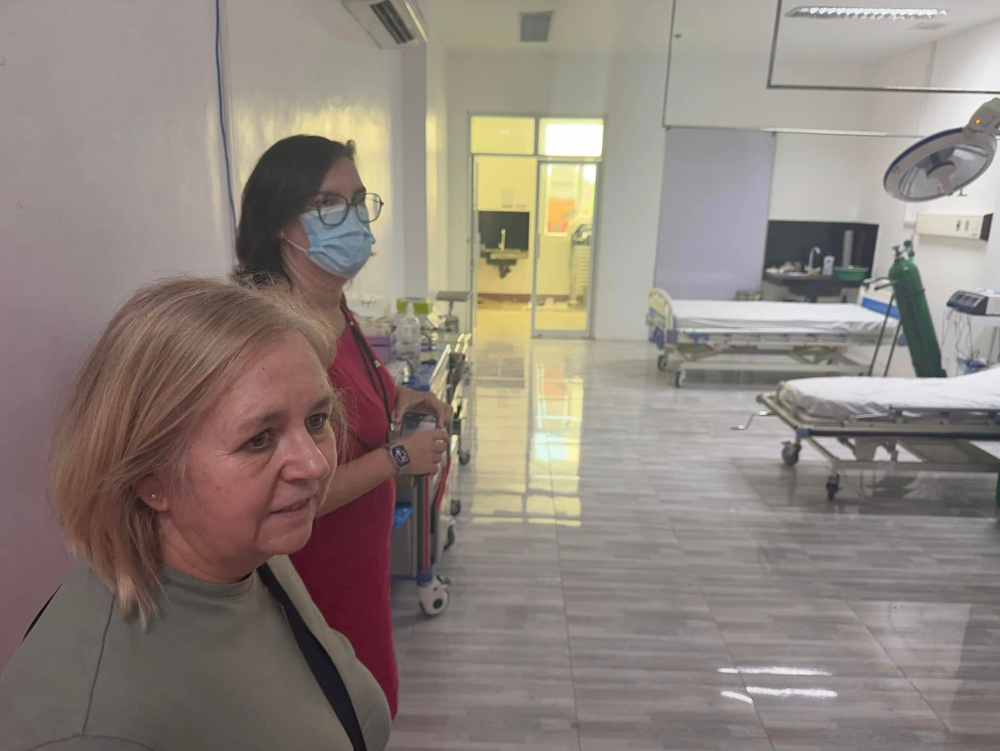
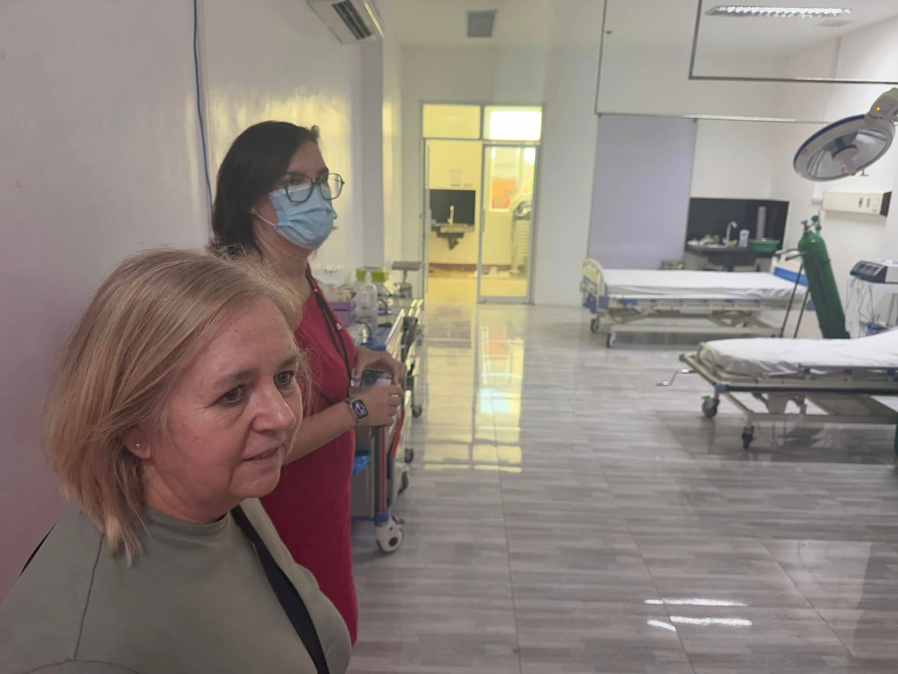

Highlights of Day 3 & 4 visit of the Odisee University College-
Aalst Campus, Belgium Department of Health Sciences- Nursing Program
Head/International Relations Coordinator, and the Clinical Coordinator,
16-23 February 2025:
Day 3: visit to Baguio General Hospital and Medical Center, Benguet General Hospital and Cordillera Hospital of the Divine Grace
Day 4: visit to Municipal Health Services and Mayors Office of Tublay, Benguet
Day 3: visit to Baguio General Hospital and Medical Center, Benguet General Hospital and Cordillera Hospital of the Divine Grace
Day 4: visit to Municipal Health Services and Mayors Office of Tublay, Benguet
 


Back to Top